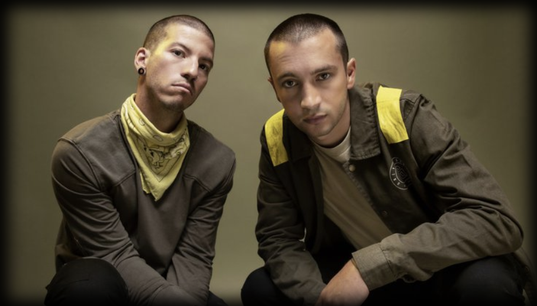

TWENTY ONE PILOTS
In 2015 brak Twenty One Pilots onze Heineken al helemaal af met een drummende crowdsurf en een achteruitsalto van de piano af – en natuurlijk met Stressed Out en Ride. Die monsterhits behandelen zware onderwerpen als depressie en onzekerheid, maar dankzij de catchy combinatie van rock, reggae en electronics zijn ze ook verdomd dansbaar. Nieuwe crossoverhits als Jumpsuit en Heathens staan vast garant voor een nog groter feest. Geef je over aan hun aanstekelijke energie en dans op alle problemen die bij het jonge leven horen. De 2 bandleden zijn Tyler Joseph en Josh Dun. Tyler is al lid van de band sinds 2009 hij doet de zang, piano,keytar, synthesizer en de ukelele. Josh is erbij gekomen toen de rst van de band stopte dat was in 2011. Josh doet de drums en de trompet.